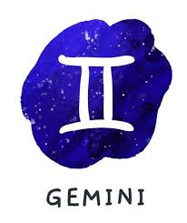
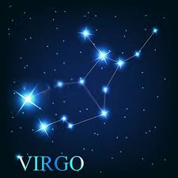
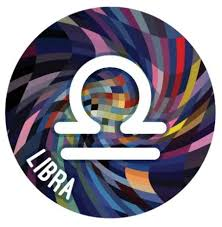
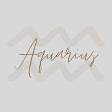

Zodiac Sign Info(saggitaruis-aquarius)
Sagittarians-They are optimistic, lovers of freedom, hilarious, fair-minded,
honest and intellectual. They are spontaneous and fun, usually with a lot of friends, and are perhaps the best conversationalists
in the zodiac (maybe tied with Gemini).They tend to inspire the people around them to live their best lives, like a cross between Oprah and Santa Claus.
Gemini-They rarely has a hidden agenda. Playful and intellectually curious,
Gemini is constantly juggling a variety of passions, hobbies, careers, and friend groups. They are the social butterflies of the zodiac:
These quick-witted twins can talk to anyone about anything. Find them buzzing between happy hours, dinner parties, and dance floors.

Virgo- It is an earth sign historically represented by the goddess of wheat
and agriculture, an association that speaks to Virgo’s deep-rooted presence in the material world. Virgos are logical, practical,
and systematic in their approach to life. This earth sign is a perfectionist at heart and isn’t afraid to improve skills
through diligent and consistent practice.

Libra-It is an air sign represented by the scales (interestingly, the only inanimate object of the zodiac),
an association that reflects Libra's fixation on balance and harmony. Libra is obsessed with symmetry and
strives to create equilibrium in all areas of life. These air signs are the aesthetes of the zodiac:
Ruled by Venus, the planet that governs love, beauty, and money.

Aquarius-The 11th sign of the zodiac, Aquarius is represented by the Water Bearer,
a symbol of the Gods bringing nourishment to Earth. People born under the Aquarius sign are said to be progressive,
independent, intelligent, unique, and idealistic.Their elemental sign is air, the same as that for Gemini and Libra.Finally,
being an Aquarius usually means being original and a little eccentric. It's not uncommon for Aquarians to embrace their
creativity and uniqueness, even if it makes them stand out from others in a slightly odd or unconventional way
